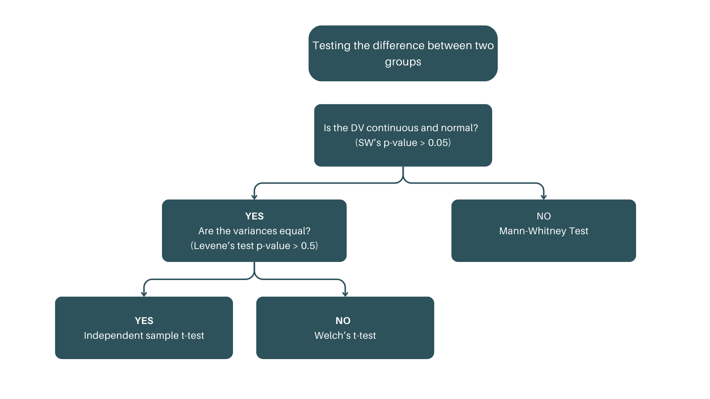
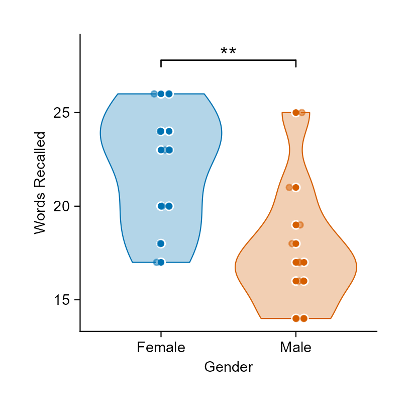

Hypothesis testing is a statistical method used to make inferences or draw conclusions about a population based on sample data.
It involves evaluating two competing hypotheses to determine if there is enough evidence to support a particular claim.
State the hypotheses: Define H₀ and H₁.
Choose a significance level (α): Common choices are 0.05 or 0.01. This determines the threshold for rejecting H₀.
Select the appropriate test: Based on the data type and hypotheses (e.g., t-test, ANOVA).
Compute the test statistic: This involves calculating a value that measures the difference between the sample data and the null hypothesis.
Make a decision:
Type I Error (False Positive)
Type II Error (False Negative)
The test statistic is a value calculated from the sample data used to decide whether to reject the null hypothesis.
The p-value is the probability of obtaining a result at least as extreme as the one observed, given that H₀ is true.
To prove a hypothesis is true.
To make inferences about a population based on sample data
To collect sample data.
To test the validity of a hypothesis in all situations.
There is a significant difference between the two groups.
There is no effect or no difference between the two groups
The sample data is unreliable.
The alternative hypothesis is true.
The probability that the null hypothesis is true.
The probability of observing a test statistic as extreme as the one calculated, assuming the null hypothesis is true
The critical value required to reject the null hypothesis.
The likelihood of making a Type II error.
Concluding there is no effect when one exists.
Concluding there is an effect when none exists.
Rejecting the null hypothesis when it is true
Accepting the null hypothesis when it is false.
0.10
0.01
0.05
0.50
parametric tests rely on the assumptions regarding the functional shape of underlying population probability distribution (i.e., normal distribution)
non-parametric are distribution-free statistical procedure that do not rely on assumptions that the data originates from a specific family of probability distributions
| Parametric tests | Non-parametric tests |
|---|---|
| Independent sample t-test | Mann-Whitney U test |
| Paired samples t-test | Wilcoxon signed rank test |
| One-way ANOVA | Kruskal-Wallis test |
| Chi-squared tests |
| Purpose | Data types | Usage |
|---|---|---|
|
|
|
| Purpose | Data requirements | Example |
|---|---|---|
|
|
|

Steps in Hypothesis testing
State the hypotheses
Specify the decision rule and the level of
statistical significance.
Test the assumptions and Identify the appropriate test.
Compute for the statistic and p-value
Decision: Compare p-value and alpha value.
Interpretation and reporting
Example
A researcher wants to investigate whether first-year male and female students at a university differ in their memory abilities. Ten male students and 10 female students were randomly selected from the first-year enrolment roll to serve as subjects. All 20 subjects were read 30 unrelated words and were then asked to recall as many of the words as possible. The numbers of words correctly recalled by each subject were recorded.
Step 1: State the hypotheses
Step 2: Specify the decision rule and the level of statistical significance
Step 3: Test the assumptions
Step 3: Test the assumptions
Both p-values are well above 0.05, so there’s no evidence against normality in either group — the distribution of words recalled is consistent with a normal distribution for both male and female students. This supports the normality assumption required for the independent-samples t-test.
Step 3: Test the assumptions
Step 3: Test the assumptions
Step 3: Test the assumptions
Step 3: Test the assumptions
Since p > 0.05, there’s no evidence against the assumption of equal variances between the male and female groups — the variances of words recalled can be treated as homogeneous. This supports using the standard pooled-variance (equal variances assumed) independent-samples t-test rather than the Welch correction.
Step 4: Compute the statistic and p-value
# running a t-test with equal variance assumption
ind_t_test_result <- t.test(
words ~ gender,
data = sample_data1,
var.equal = TRUE,
na.rm = TRUE
)
ind_t_test_result
Two Sample t-test
data: words by gender
t = 3.0203, df = 18, p-value = 0.007353
alternative hypothesis: true difference in means between group Female and group Male is not equal to 0
95 percent confidence interval:
1.339409 7.460591
sample estimates:
mean in group Female mean in group Male
22.1 17.7 Step 5: Conclusion and interpretation
library(report)
report(ind_t_test_result)
Effect sizes were labelled following Cohen's (1988) recommendations.
The Two Sample t-test testing the difference of words by gender (mean in group
Female = 22.10, mean in group Male = 17.70) suggests that the effect is
positive, statistically significant, and large (difference = 4.40, 95% CI
[1.34, 7.46], t(18) = 3.02, p = 0.007; Cohen's d = 1.42, 95% CI [0.38, 2.44])Note
Supposed equal variances were not assumed, the Welch’s t-test would be used instead. The results of the Welch’s t-test are as follows:
# running a t-test with unequal variance assumption
welch_t_test_result <- t.test(
words ~ gender,
data = sample_data1,
var.equal = FALSE,
na.rm = TRUE
)
welch_t_test_result
Welch Two Sample t-test
data: words by gender
t = 3.0203, df = 17.958, p-value = 0.007367
alternative hypothesis: true difference in means between group Female and group Male is not equal to 0
95 percent confidence interval:
1.338899 7.461101
sample estimates:
mean in group Female mean in group Male
22.1 17.7 Note
Supposed equal variances were not assumed, the Welch’s t-test would be used instead. The results of the Welch’s t-test are as follows:
Effect sizes were labelled following Cohen's (1988) recommendations.
The Welch Two Sample t-test testing the difference of words by gender (mean in
group Female = 22.10, mean in group Male = 17.70) suggests that the effect is
positive, statistically significant, and large (difference = 4.40, 95% CI
[1.34, 7.46], t(17.96) = 3.02, p = 0.007; Cohen's d = 1.43, 95% CI [0.38,
2.44])Note
You can also visualize the results of the independent sample t-test using the ggstatsplot package, which provides a convenient way to create informative plots that include statistical test results.
Note
Or you can visualize the results of the independent sample t-test using the tidyplots package.
sample_data1 |>
tidyplot(x = gender, y = words, color = gender) |>
add_violin(alpha = 0.3) |>
add_data_points_beeswarm(white_border = TRUE) |>
add_test_asterisks(hide_info = TRUE) |>
add_data_points_jitter(alpha = 0.5) |>
remove_legend() |>
adjust_x_axis_title("Gender") |>
adjust_y_axis_title("Words Recalled")
Note
Supposed normality test fails, the Mann-Whitney U test (also known as the Wilcoxon rank-sum test) can be used as a non-parametric alternative to the independent samples t-test.
also known as the Wilcoxon rank-sum test
is a non-parametric test used to compare the medians of two independent groups when the assumptions of the independent samples t-test are not met (e.g., non-normal distribution).
Assumptions
Example
Suppose that the following data have been collected representing monthly incomes for teachers employed in two different private schools (School A and School B). The researcher wishes to determine whether there is a substantial difference between these incomes.
Step 1: State the hypotheses
Step 2: Specify the decision rule and the level of statistical significance
Step 3: Test the assumptions and identify the appropriate test
School A’s Shapiro-Wilk result is \(p = 0.856\), while School B’s is \(p = 0.042\). At \(\alpha = 0.05\), normality is not rejected for School A but is rejected for School B. This supports using the Mann-Whitney U test as a nonparametric comparison.
Step 3: Test the assumptions and identify the appropriate test
Visual inspection of income distributions by school:
Step 3: Test the assumptions and identify the appropriate test
Q-Q plots by school:
Step 4: Compute the statistic and p-value
mann_whitney_u_test <-
wilcox.test(
sample_data2$income ~ sample_data2$school,
exact = FALSE
)
mann_whitney_u_test
Wilcoxon rank sum test with continuity correction
data: sample_data2$income by sample_data2$school
W = 15, p-value = 0.006167
alternative hypothesis: true location shift is not equal to 0Step 5: Conclusion and interpretation
library(report)
report(mann_whitney_u_test)
Effect sizes were labelled following Funder's (2019) recommendations.
The Wilcoxon rank sum test with continuity correction testing the difference in
ranks between sample_data2$income and sample_data2$school suggests that the
effect is negative, statistically significant, and very large (W = 15.00, p =
0.006; r (rank biserial) = -0.72, 95% CI [-0.89, -0.38])Normality of the dependent variable in both groups
Equal variances between the two groups
Independence of observations within each group
All of the above
When the sample sizes are small
When the data is normally distributed
When the variances of the two groups are equal
When the data is not normally distributed
Independent t-test
One-way ANOVA
Mann-Whitney U-test
Pearson correlation
There is no significant difference between the two groups
There is a significant difference between the two groups
The test is inconclusive
The assumptions of the test are not met
Used to compare the means of two related groups.
Example: Comparing test scores before and after a training program.
Assumptions: Normality, homogeneity of variance, and dependent observations.
Tip
Steps in hypothesis testing:
State the hypotheses.
Specify the level of statistical significance (α).
Test assumptions and identify the appropriate test.
Compute the statistic and p-value.
Decision: Compare p-value and alpha value.
Conclusion.
Assumptions
Example
A researcher designed an experiment to test the effect of drug X on eating behavior. The amount of food eaten by a group of rats in a one-week period, prior to ingesting drug X, was recorded. The rats were then given drug X, and the amount of food eaten in a one-week period was again recorded. The following amounts of food in grams were eaten during the “before” and “after” conditions.
Step 1: State the hypotheses
Step 2: Specify the decision rule and significance level
Step 3: Check assumptions and select the test
The test of normality is applied to the paired differences, not separately to before and after scores. A non-significant Shapiro-Wilk result does not provide evidence against normality.
Step 4: Compute the statistic and p-value
t.test(
sample_data3$before,
sample_data3$after,
paired = TRUE
)
Paired t-test
data: sample_data3$before and sample_data3$after
t = 5.0765, df = 9, p-value = 0.000666
alternative hypothesis: true mean difference is not equal to 0
95 percent confidence interval:
29.38239 76.61761
sample estimates:
mean difference
53 Step 5: Compare the p-value with alpha and interpret
The paired t-test gives \(t(9) = 5.08\), \(p < 0.001\). Since \(p < 0.05\), reject \(H_o\). Before drug X, rats ate an average of 53 grams more per week than after taking the drug (95% CI for before-minus-after: 29.38 to 76.62 grams). In this sample, food consumption was lower after treatment.
Activity: Dependent t-test
Using the a synthetic data on training scores of before and after a training program, test whether there is a statistically significant difference in the scores before and after the training program.
Step 1: Import data and data management
## using a synthetic dataset
before <- c(12.2, 14.6, 13.4, 11.2, 12.7, 10.4, 15.8, 13.9, 9.5, 14.2)
after <- c(13.5, 15.2, 13.6, 12.8, 13.7, 11.3, 16.5, 13.4, 8.7, 14.6)
training_data <- tibble(
subject = rep(c(1:10), 2),
time = rep(c("before", "after"), each = 10),
score = c(before, after)
) |>
mutate(time = as_factor(time))
head(training_data)
# A tibble: 6 × 3
subject time score
<int> <fct> <dbl>
1 1 before 12.2
2 2 before 14.6
3 3 before 13.4
4 4 before 11.2
5 5 before 12.7
6 6 before 10.4Step 3: Test of homogeneity of variance
Step 4: Perform dependent sample t-test
t.test(
training_data$score[training_data$time == "before"],
training_data$score[training_data$time == "after"],
paired = TRUE,
na.rm = TRUE
)
Paired t-test
data: training_data$score[training_data$time == "before"] and training_data$score[training_data$time == "after"]
t = -2.272, df = 9, p-value = 0.0492
alternative hypothesis: true mean difference is not equal to 0
95 percent confidence interval:
-1.077655745 -0.002344255
sample estimates:
mean difference
-0.54 Comparing the test scores of two independent groups.
Measuring the effectiveness of a training program by comparing pre and post test scores of the same individuals
Comparing the heights of men and women in a population.
Testing the correlation between two variables.
The means of the two groups are equal.
The means of the paired measurements are equal.
The paired differences have a mean of zero
There is no relationship between the two variables.
lm()
t.test()
aov()
cor.test()
| Purpose | Data requirements | Example |
|---|---|---|
|
|
|
| Purpose | Data requirements | Example |
|---|---|---|
|
|
|
Steps in Hypothesis testing
State the hypotheses
Specify the decision rule and the level of
statistical significance.
Test the assumptions and Identify the appropriate test.
Compute for the statistic and p-value
Decision: Compare p-value and alpha value.
Conclusion
Step 1: Import data and data management
# Create the dataframe
exam_data <- data.frame(
group = c(
rep(1, 10),
rep(2, 10),
rep(3, 10)
),
exam = c(
50,
45,
48,
47,
45,
49,
50,
54,
57,
55, # Group 1
63,
55,
54,
49,
65,
46,
53,
67,
58,
50, # Group 2
71,
67,
68,
62,
65,
58,
63,
69,
70,
61 # Group 3
)
) |>
mutate(group = as_factor(group))
# View the dataframe
head(exam_data)
group exam
1 1 50
2 1 45
3 1 48
4 1 47
5 1 45
6 1 49Step 3: Test of homogeneity of variance
Step 5: Post-hoc test
Data visualization and Analysis using R | October 14-16, 2026 | CBDEM-LED AVR